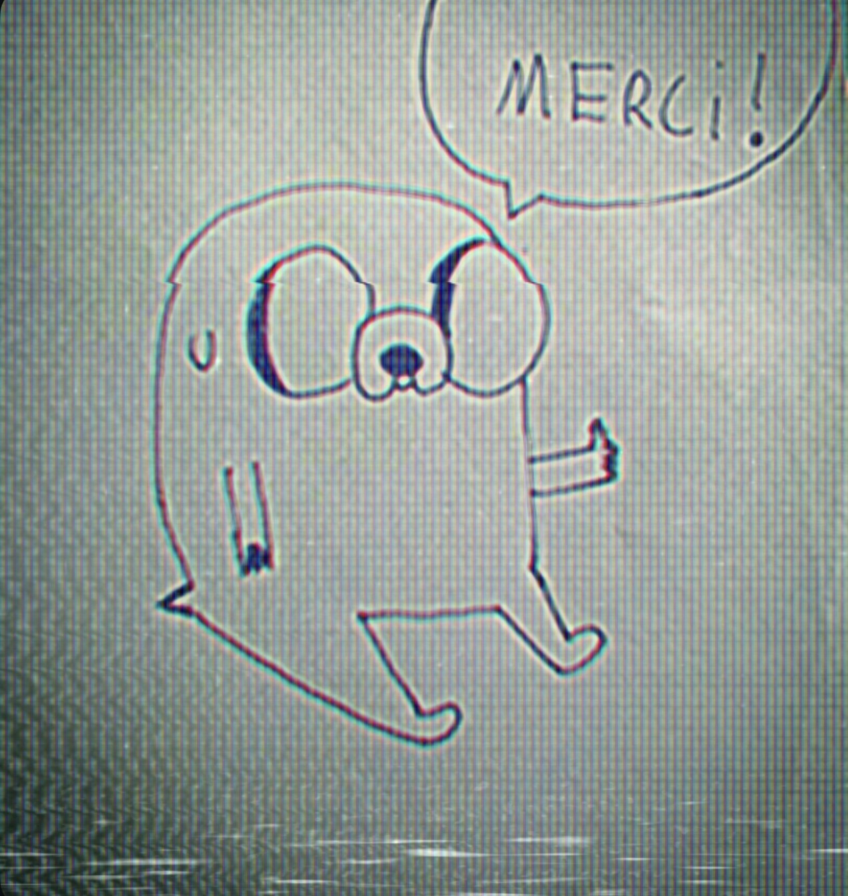

Joyeux jours à toi j'espère..
Les mots n'ont plus de sens, mais est ce que t'apporter ces informations sur moi pourrait y changer quelque chose, non je ne le pense pas.
Malgré tout je voudrais t'en informer. M'attacher à ces bouts de vies qui m'ont forgé, ce n'est plus un soucis.
J'ai eu de nombreuses expériences particulièrement spéciales tant dans le douloureux que dans le positif.
J'ai accumulé les informations sur la plupart des choses de la vie au fur et à mesure des années, fatigué oui, mais maintenant je suis en coeur avec moi même.
Je suis enfin devenu petit à petit un homme un peu plus libre chaque jours. Comprendre m'a permis de relativiser, et d'apporter un fonctionnement appart qui me sert de mouvement de vie. Tout ce que je recherchais se concrétise, j'arrive pour le mieux dans le pire, au bord oui, mais je peux maintenant survoler ces rives avec les couleurs que j'ai enfin souhaiter. Je suis libre, je n'ai pas choisis d'être au plus mal, mais j'ai choisi d'être qui je suis maintenant.
J'ai creusé tant de temps pour apprendre toujours plus.
Je suis diagnostiquée Schizophrène/TSA/TDAH donc j'ai une ribambelle de comorbidité, ce qui n'est pas un soucis, j'aime ma couleur de coeur, sa noirceur aussi, je prends ma vie au sens de la raison. La plupart de mes comportements, mécanismes, symptômes, manières d'être et de faire, sont compréhensible par ces liaisons de troubles, dictés d'une façon ou d'une autre par des bouts de pathologie mixés.
Je souhaite et j'ai toujours souhaité vouloir me faire comprendre et expliquer mes pensées, et, je suis ici présent encore et encore, pour que tu puisses me laisser une chance d'échanger, sans but précis si ce n' est parler de ce que je n'ai jamais pu te dire, je ne veux pas rentrer dans ta vie pour la troubler encore je te l'assure. Il me faut un moment cette liberté d'exprimer tout ce bordel que j'ai vécu dans ma vie, enfin, tout celui que j'ai laisser à certains moments sans explication ou raison valable.
Être clair, dire la vérité, avoir ma liberté de pouvoir enfin le faire, je t'en prie, j'ai grandis et j'ai pour une fois plus aucune censure d'être. Mon envie de donner cette lumière sur ce flou, me permettrait d'avoir enfin cette paix d'esprit, que touts ces doutes que tu as sûrement du avoir ont des réponses, oui je t'ai blessé et ca n'a jamais était mon intention, je te le jure. Mes excuses paraîtront sûrement fade ou amer et ça ne justifiera pas mes comportements passées. Seulement, il y a maintenant des explications et des raisons du pourquoi du comment. Je sais maintenant m'exprimer en toute liberté de conscience, et je te le dis avec le coeur, la pensée et la vie qu'on a mené, que je suis désolé pour tout le mal que je t'ai fais.
Je n'attends rien que tu puisses regretter, j'ai toujours voulu être droits et honnête, et c'est la vérité que j'aimerai transmettre aujourd'hui comme finalité. Sans demander de renouement forcé entre nous, un échange pour discuter et apporter un état d'esprit de clarté me semble une des meilleures choses à faire, qui pourrait nous être favorable.
Mes plus grandes affections à toi Céliou, Merci à toi d'avoir pris le temps de lire, porte toi bien...
Signé Bastion.

[ fin de transmission ]